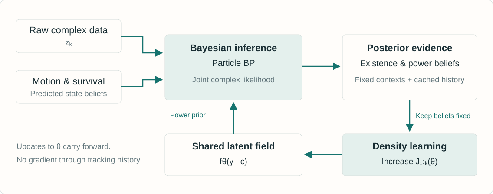

This independent walkthrough follows version 1 of Learning Latent Fields in Multiobject Tracking. BP-TkBD-NF combines a physics-based superpositional observation model, particle-based belief propagation and a conditional normalizing flow for signal-power priors. The two interactive labs explain selected mathematical mechanisms using synthetic data: two-source covariance information and single-object tracking with a learned conditional lognormal prior. They do not reproduce the complete BP tracker, the neural flow architecture or any paper benchmark.
The covariance lab isolates how complex cross-channel correlations encode direction. The learning lab tracks one known-present object while fitting a shared conditional power density. Expanded reading notes contain assumptions and references for every slide. The principal experimental comparisons come from Tables II and III, and the controlled prior ablation in Section V-C5.
A full complex FFT changes coordinates without discarding information.
DETECT, THEN TRACK
A front end estimates peaks or geometric detections.
The tracker receives those estimates and their associated uncertainty.
Magnitude conversion, selection and point extraction can discard information.
THE PAPER’S OBSERVATION MODEL
Keep the joint complex-valued measurements.
Explain the superposed signal with object states, existence variables and power distributions.
Use geometry and temporal dynamics before reducing the posterior to estimates.
Explanation
A full invertible complex FFT is information preserving. The paper does not claim FFT itself destroys information. The radar method also uses coarse 3-D FFT peaks to initialize birth proposals, then uses the complex ADC tensor for the Bayesian update. Comparisons across complete methods also change priors, models and inference procedures, so they do not isolate an information-loss penalty caused solely by compression.
Potential objects carry both a kinematic state and a binary existence variable.
AT TIME k
Variable
Meaning
Role
xₖ,ₙ
Position, velocity or another kinematic state
Determines array response a(xₖ,ₙ)
rₖ,ₙ ∈ {0,1}
Existence of potential object n
Gates its contribution
γₖ,ₙ > 0
Conditional complex-amplitude power
Drawn from the latent-field density
ηₖ > 0
Effective background-noise variance
Inferred with the object states
UNKNOWN NUMBER OF OBJECTS
\(L_k=\sum_{n=1}^{N_k}r_{k,n}\) A known list of potential objects represents an unknown active subset.
Explanation
The model uses Nk potential objects, a known number maintained by the inference algorithm, to represent the random actual count Lk. Existing tracks survive probabilistically and new potential objects use birth priors. The state vector hk collects the kinematic states, the pairs (r,γ), and the noise variance. Signal power is a random variable conditional on context, rather than a deterministic function of location.
The amplitudes are conditionally independent zero-mean proper complex Gaussians, and the effective background noise is independent of them. The model applies to one measurement block. Multiple sensors, frequencies or snapshots use a conditional block-likelihood factorization. The power γ is defined relative to the normalization of a(x), so changing that normalization changes the numerical scale of γ. It is not automatically a calibrated absolute source-power estimate.
The signal-dependent part has rank at most min(C,Lk). The model’s mean is zero because it marginalizes random zero-mean amplitudes, not because the observations contain no geometric information. A diagonal-only likelihood discards the modeled cross-channel correlations. The displayed complex Gaussian log-density is a direct expansion of Eq. (3), with no one-half factor, unlike a real Gaussian log-density.
A small synthetic array makes the covariance mechanism visible.
WHAT TO CHANGE
Change separation, SNR or the number of snapshots.
The first bearing and both equal powers are known. The likelihood scans the second bearing.
Compare joint likelihood, beam power and sensor-wise powers.
WHAT TO LOOK FOR
The measured cross-sensor covariance changes with the samples.
Beam power retains angle information through cross-products.
With equal-magnitude steering vectors, sensor-wise powers alone cannot distinguish directions.
Explanation
This is a teaching specialization of Eqs. (1)–(4) to a six-element half-wavelength uniform linear array with synthetic complex-Gaussian observations. Both equal source powers, the first bearing and the noise variance are known to the covariance likelihood scan, which infers the second bearing. The beam scan uses the same samples but does not use the same scene knowledge, so this is not a fair end-to-end accuracy comparison. The exact controls and plotted curves belong to the laboratory. A diagonal-only comparison isolates a modeling change in this toy problem. It is not one of the paper’s benchmark baselines and does not measure the loss from every practical detector. No full multitarget BP recursion runs in this lab.
This synthetic laboratory illustrates the joint complex Gaussian likelihood. It is a reduced model, not a reproduction of the experiments. The full tracker additionally handles uncertain kinematics, existence, power and noise through approximate particle-based BP. Reset restores the teaching scenario.
The paper defines independent copies of a context-indexed positive random field. Values at distinct contexts are independent under its construction. Spatial sharing comes from the shared conditional density parameterization and context encoder, rather than a Gaussian-process-like correlated random field. Nearby positions may have similar distributions, but this is a property encouraged by the parameterization and observations, not a specified covariance kernel over locations.
The experiments use information from the preceding posterior.
CONTEXT INPUTS
Positional encoding of the previous estimated object position.
Known sensor parameters, such as tone frequency or sensor position.
In some settings, signal features or summaries of the preceding power posterior.
CONSEQUENCES
The flow learns a conditional prior for the current update.
The position estimate itself is uncertain, but its encoded context is held fixed.
Unvisited contexts require extrapolation.
A symmetric encoding can enforce a symmetric field.
Explanation
The context ck,n is a fixed input during each inference and learning step. For the radar field visualization, the authors intentionally omit object-specific features and use an encoding that enforces symmetry about zero azimuth. Thus the symmetry in Figure 7 is not an independently discovered environmental property. The method does not infer a separate correlated field value jointly at every unobserved location. It evaluates the learned conditional density there.
An invertible map turns base noise into positive power
Context selects the transform. Shared parameters determine how context acts.
BASE DRAW
\[\epsilon\sim f_0\]
A simple reference density
CONDITIONAL FLOW
\[\mu=T_\theta(\epsilon;c)\]
A sequence of monotone bijections
POSITIVE POWER
\[\gamma=G(\mu)\]
A smooth positive-output map
TWO DIRECTIONS
Forward: draw power-prior particles. Inverse: evaluate the density at inferred power particles.
Explanation
Section III-D uses scalar invertible strictly monotone transformations whose coefficients depend on a context encoder such as an MLP or CNN. The output μ lies on the real line, and G maps it to positive γ. The composition defines an explicit normalized density and permits both prior sampling and log-density evaluation. Flexibility comes from nonlinear transformation of density, not from a deterministic prediction of one power value.
Evaluate the base log-density and subtract the log-Jacobian terms.
Differentiate this value with respect to θ.
Explanation
The variables satisfy y0=ε, yℓ=Fθℓ(yℓ−1;c) and μ=yQ. Inverse evaluation maps a fixed inferred power sample back to the base coordinate. The derivative of the complete composite map is the product of the layer derivatives and G′. Absolute Jacobians cover either orientation, while the implemented monotone maps maintain a valid bijection. A Gaussian base does not restrict the transformed output to a Gaussian power density.
The updated field becomes a prior for later measurements.

Explanation
This is the inference and learning loop in Figure 3 and Section IV. The procedure alternates a particle-based approximate E-step and a generalized variational M-step. It does not differentiate through the tracking recursion. Past posterior evidence is stored and held fixed rather than recomputed every time the flow parameters change. Updated θ carries forward to the next time step.
Kronecker factors receive an additional mean-factor approximation.
Existence thresholds declare and prune tracks.
Explanation
The paper introduces a formal auxiliary joint density q(hk), but BP computes only its marginal approximations. The expected array outer product approximation removes the covariance of a(x), and it is not an identity in general. These choices make the implementation tractable. Declared object states use posterior MMSE estimates. A successful complex Gaussian likelihood evaluation alone does not make the approximate inference exact.
Then only the conditional power-density terms contribute to the θ update.
Explanation
The ELBO identity holds for an appropriate fixed auxiliary density q. The implementation uses approximate BP marginals for the needed expectations. During the flow update, the measurement likelihood and q are held fixed, as are the preceding prediction computations and contexts. This avoids backpropagation through tracking history. Raising the particle-estimated objective is a generalized approximate learning step, not proof of globally optimal filtering or exact evidence maximization.
eₙ is existence probability. Conditional particle weights sum to one.
Fit a density to uncertain evidence, without ground-truth power labels.
Explanation
This weighted sum is the direct particle approximation of Eq. (21). Existence eₙ must not be confused with a conditional particle weight wₙ,j, and neither is a point estimate of γ. A component with zero existence weight contributes no gradient. A posterior can still be wrong: the objective weights inferred evidence, not verified labels. Repeatedly training the same fixed cache optimizes this objective rather than adding new independent measurements.
A transparent finite-grid model exposes how posterior beliefs train a shared density.
WHAT TO TRY
Press Step to see one prediction, inference and learning update.
Run repeated traversals to revisit the same contexts.
Turn model updates off to inspect the effect of adaptation.
Change the SNR or seed and compare both filters.
WHAT IS COMPUTED
\[\log\gamma=\mu_\theta(c)+\sigma\epsilon\]
An affine conditional flow followed by exponentiation gives a lognormal power prior.
One finite-grid filter learns. The comparison filter keeps a fixed broad prior.
Both receive the same raw complex samples.
Explanation
The lab fixes existence probability at one and tracks one object using four sensors and three snapshots per frame. Numerical quadrature approximates its Bayesian position and log-power posterior. The context is the preceding position estimate, fixed during the current update. A regularized regression fits the conditional mean of log power to cached posterior expectations E[log γ]. The density family has fixed log-scale σ and is deliberately less flexible than the paper’s neural flow. Ground truth appears only in evaluation and plots, never in inference or training.
The known-present single-object lab sets the existence weight in Eq. (21) to one. It illustrates the inference-learning loop with finite-grid Bayesian filtering and a conditional lognormal density with a fixed log-scale. The power-field plot displays median power exp μ(c), not the mean of γ. The true synthetic density uses a different log-scale, so the restricted learner cannot recover its full shape. Reported RMSE is computed from the selected synthetic run and need not improve for every seed or setting. This lab does not reproduce the paper’s multiobject neural-flow BP algorithm.
Accumulation shares information across time without rerunning old inference.
ACCUMULATED OBJECTIVE · EQ. (22)
\[J_{1:k}(\theta)=\sum_{k'=1}^{k}J_{k'}(\theta)\]
Store prior-step contexts, existence probabilities and power particles.
Initialize θ from its preceding value and take a few gradient steps.
INTERPRETATION
Inference is an approximate E-step.
Density learning is a generalized variational M-step.
There is no backpropagation through the filtering history.
Stored mistakes and context mismatch can affect later learning.
Explanation
The paper explicitly holds all cached posterior quantities from earlier time steps fixed, and does not recompute them with the latest θ. It describes a few gradient-based steps that increase the accumulated objective. This is approximate generalized variational EM, not an exact batch EM algorithm over all historical hidden states. The cumulative cache also raises a separate long-horizon memory and nonstationarity question beyond the efficient per-likelihood algebra.
Use low-rank matrix identities and Kronecker-structured array responses.
For fixed object and particle budgets, the proposed evaluation scales linearly in C.
It still has costs in objects, particles and training.
Explanation
The displayed identities follow from the matrix determinant lemma and Woodbury identity for η>0. They illustrate the structural idea; the paper’s particle-BP implementation also uses Gaussian moment matching and Kronecker approximations described in its supplement. Linear scaling refers to measurement dimension with other budgets fixed. It is not a claim of linear complexity in every problem dimension or a guarantee of low total runtime.
A dense radar covariance is the wrong data structure
The paper’s illustrative configuration has C = 128 × 256 × 16 = 524,288.
TABLE I · REPORTED STORAGE
Item
Representation
Memory
Input measurement
C complex values
≈ 4 MiB
Dense likelihood covariance
C × C complex matrix
≈ 2.0 TiB
Efficient representation
Decomposed components
≈ 3.1 KiB
THE COMPARISON’S SCOPE
The 3.1 KiB figure stores the Kronecker factors of one array response. The input, all particles, neural network and training cache require additional memory.
Explanation
These values are transcribed from Table I, whose caption specifies 64 bits per complex value. The small entry stores 128+256+16=400 complex factor entries for one Kronecker-structured array response, not complete application memory. The dense C² complex matrix would require approximately two tebibytes, whereas the decomposed representation avoids that allocation. Measurement storage itself remains proportional to C.
The radar study separates simulation and real data
The learned field supplies a power prior in both settings.
CONTROLLED RADAR SIMULATION
Two sensors observe five objects with different birth and death times over 80 steps.
Each sensor contributes 2,000 complex entries per step.
Known radar-equation power permits a field comparison.
Learned and reference power maps differ by less than about 2 dB over the ROI.
UWCR REAL RADAR DATA
The Bayesian update uses a complex ADC tensor with 261,120 entries per frame.
Coarse FFT peaks supply birth proposals.
The flow starts anew for each sequence and learns during runtime.
Reported comparisons average 50 Monte Carlo runs.
Explanation
The simulated setting uses a known radar-equation signal-power model, a constant-velocity model and two sensor blocks sharing a latent field through sensor-aware context. The real UWCR setting uses a different FMCW configuration. The radar field agreement is a simulation finding, not a calibrated real-world propagation reconstruction. Real-data results report GOSPA with c=5 m, p=1 and α=2.
The latent field adds a smaller gain beyond raw-data tracking
Selected rows from UWCR Table II. Lower GOSPA is better.
GOSPA AND ITS COMPONENTS · METRES
Method
GOSPA
Localization
Missed
False
MVDR + BP
0.871
0.759
0.048
0.065
RAMP-CNN + BP
0.765
0.690
0.040
0.035
BP-TkBD-RW
0.577
0.542
0.017
0.018
BP-TkBD-NF
0.552
0.526
0.013
0.013
THE CLOSEST COMPARISON
With the same likelihood evaluation, NF lowers GOSPA 4.3% versus the random-walk prior.
Explanation
Table II reports 50-run averages on UWCR, with GOSPA c=5 m. BP-TkBD-RW replaces the shared latent field with a random-walk power model while retaining the efficient likelihood evaluation. The computed relative reduction is (0.577−0.552)/0.577≈4.33%. Compared with RAMP-CNN+BP it is about 27.8%, but that broader comparison changes representation, model and inference together. Displayed components may differ from their sum because the table rounds values.
Learning dominates the proposed method’s per-frame cost
UWCR timings use the same workstation. They do not imply universal speed rankings.
SELECTED TABLE II TIMINGS · MS/FRAME
Method
Runtime
MVDR + BP
4.57 + 8.86
RAMP-CNN + BP
414.25 + 9.18
BP-TkBD-RW
29.09
BP-TkBD-NF
69.86
Detector and tracker times are separate where shown.
NF RUNTIME BREAKDOWN
21.45 ms Bayesian inference
45.06 ms Flow update
3.34 ms Prior generation and initialization
Minor sum discrepancy comes from rounding.
Explanation
The reported workstation has an AMD Ryzen Threadripper PRO 5955WX, 128 GB RAM and an NVIDIA RTX 4090 with 24 GB memory. Runs use Python/PyTorch/CUDA and single precision. Learning-based detector times exclude offline training and separately executed preprocessing. The NF total exceeds the RW baseline and classical detect-then-track examples, but is lower than the listed neural detector pipelines. These are implementation-specific observed timings, not asymptotic guarantees.
The same framework uses a different physics-based manifold
SWellEx-96 uses 21 hydrophones, seven tones and three snapshots per step.
TABLE III · GOSPA IN METRES
Method
GOSPA
Localization
Missed
False
MP
35.973
30.322
2.825
2.825
SBL
36.312
30.148
3.253
2.911
MP-BP
32.377
29.123
3.082
0.172
SBL-BP
32.624
29.285
3.082
0.257
BP-TkBD-NF
30.832 ± 0.09
27.835
2.997
0.000
CONTEXT AND METRIC
Replica vectors describe a dispersive underwater waveguide. The flow conditions on estimated source location and tone frequency. GOSPA cutoff: 100 m.
Explanation
Table III compares detector-only, detect-then-track and raw-complex methods on SWellEx-96. The source to be tracked emits known tones; an additional ship interferer is present but is not itself tracked. The tones and matched-field processing help suppress it. The method retains joint complex observations across seven tones and three snapshots after a common short-time Fourier front end. Acoustic and radar GOSPA numbers use different cutoffs and spatial scales, so they are not directly comparable.
Context and density flexibility both affect performance
The acoustic simulation fixes measurements, inference and trajectories.
SECTION V-C5 · GOSPA IN METRES
Signal-power prior
GOSPA
Flow with spatial context and preceding-posterior summaries
21.44
Flow with spatial context only
22.13
Flow with shifted base PDF
23.57
Context-conditioned Gamma prior
27.16
Gamma random walk
31.92
READING THE ABLATION
The controlled comparison gives clearer evidence for the power-prior design.
Explanation
Section V-C5 reports this controlled simulation with KRAKEN-generated measurements. The comparison keeps the measurement model, inference procedure and trajectories fixed. A flow with preceding-posterior summaries in its context has the lowest reported GOSPA. These values are simulation findings and are distinct from real-data Table III. The results support useful context and flexible density modeling in this setup, rather than proving every conditional flow will outperform every parametric prior.
The method learns power statistics relative to a chosen physical model.
WHAT THE EVIDENCE SUPPORTS
Joint complex data and a learned power prior improve the reported tracking tasks.
The flow can reuse observations across contexts and objects.
Low-rank structure makes large measurement blocks feasible.
WHAT REMAINS CONDITIONAL
Array-manifold and background-noise assumptions can be wrong.
BP, rank-one moment matching and fixed estimated contexts introduce approximation.
Unvisited locations extrapolate. Encoding can impose structure.
KRAKEN is a physics reference, not field ground truth.
Explanation
Figure 9 compares normalized range-dependent power trends with a KRAKEN model. It does not validate absolute source power, and KRAKEN itself can differ from the true environment. Higher-frequency interference patterns and modeling mismatches are harder to capture. The approach does not reconstruct a deterministic complex wavefield, recover separate reflectivity and attenuation factors, or provide an exact joint posterior. Its strongest contribution is coupling a flexible conditional power prior with online approximate Bayesian tracking.
This is an independent educational companion, not an author-produced presentation. Equation explanations and laboratory visualizations are original teaching material. Reported tables are selected numerical facts attributed to the original paper, with dataset and metric context retained. The two small synthetic demonstrations explain covariance information and online conditional density learning. They do not run the full neural-flow BP tracker or reproduce its measured benchmark results.